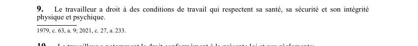

art-9-LSST : droit à des conditions de travail saines
Un article du wiki ⚖️ Recueil législatif
En bref
Droit socle du travailleur, énoncé en une seule phrase : ses conditions de travail doivent respecter sa personne. C'est l'assise sur laquelle reposent le droit de refus, le retrait préventif et les autres recours de la loi.
- Titulaire : tout travailleur, sans condition d'ancienneté, de statut d'emploi, de secteur ni de taille d'établissement.
- Quatre objets protégés, mis sur le même pied : la santé, la sécurité, l'intégrité physique et l'intégrité psychique.
- Formulation absolue : ni seuil, ni délai, ni exception, ni renvoi à un règlement dans le texte de l'article.
- Prolongements immédiats : droits d'information, de formation, de supervision et de services de santé (art. 10).
- Extension de personnes : les personnes assimilées aux paragraphes 1° et 2° de la définition de travailleur bénéficient aussi de ce droit (art. 11).
Visé : travailleur · Nature : droit
🌐 LegisQuébec · 📄 PDF officiel (page 8)
Texte officiel : capture du PDF
{kind=link}

Toucher l'image pour l'agrandir🔗 Ouvrir a cette page : LSST.pdf : page 8 · texte a jour au 26 mars 2024
Voir aussi
- art. 8.11 : disposition remplacée · disposition remplacée.
- art. 8.12 : disposition remplacée · disposition remplacée.
- art. 10 : droits formation services santé · droit : le travailleur a droit à des services de formation, d'information et de conseil en matière de santé et de sécurité, à la formation et supervision appropriées, aux services de santé préventifs et curatifs selon les risques auxquels il est exposé.
- art. 11 : droits étendus aux personnes assimilées · les personnes visées dans les paragraphes 1° et 2° de la définition du mot «travailleur» à l'article 1 jouissent des droits accordés au travailleur par les articles 9, 10 et 32 à 48.
- ↑ Loi : LSST
Pages qui pointent ici (21)
- 🎯 Démarrage rapide, conseiller SST Droit du travail
- 👷 Wiki Droit du travail mines - Travailleurs Droit du travail
- art-10-LSST : droits a la formation et aux services de santé Recueil législatif
- art-11-LSST : droits étendus aux personnes assimilées Recueil législatif
- art-2-LSST Hygiène industrielle
- art-2-LSST Sécurité industrielle
- art-62.19-LSST : organisme fédéral désigné Recueil législatif
- art-62.20-LSST : divulgation obligatoire d'urgence Recueil législatif
- art-62.21-LSST : exclusion loi sur accès Recueil législatif
- art-63-LSST : sécurité des produits et équipements Recueil législatif
- art-64-LSST : avis préalable pour contaminants Recueil législatif
- Droits et recours du travailleur Droit du travail
- Index par profil Recueil législatif
- Le comité SST et le représentant à la prévention, à quoi ils servent Droit du travail
- LSST Recueil législatif
- LSST : Chapitre I : Objet et application Recueil législatif
- LSST : Chapitre II : Droits et obligations Recueil législatif
- LSST, droits et obligations Droit du travail
- LSST, programmes et inspecteur Droit du travail
- On te demande une prise de sang ou un échantillon d'urine Hygiène industrielle
- Régime CNESST Droit du travail